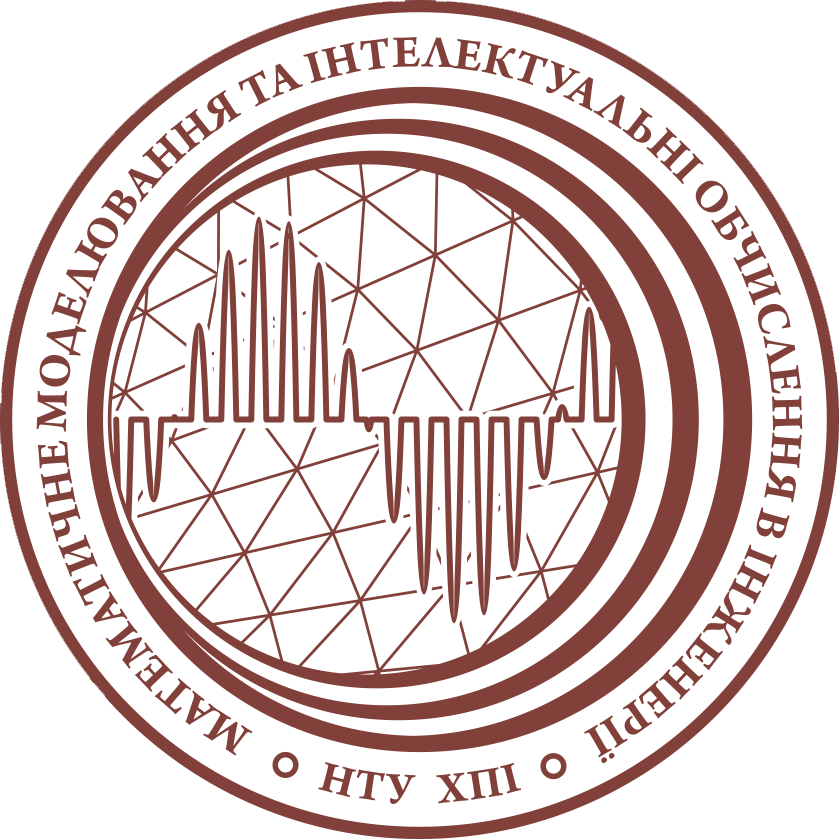

Кафедра математичного моделювання та інтелектуальних обчислень в інженерії
Історія кафедри
Історія кафедри математичного моделювання та інтелектуальних обчислень в інженерії (динаміки та міцності машин) бере свій початок у 1930 році, коли в Харківському механіко-машинобудівному інституті було створено спеціальність «Динаміка та міцність машин». Ця спеціальність стала першою в Україні освітньою програмою, яка поєднувала фізико-математичну підготовку з практичними інженерними навичками. Подібний підхід згодом здобув світове визнання як система «фізтех». Засновниками спеціальності стали видатні науковці: Йоффе Абрам Федорович, Обреїмов Іван Васильович, Синельников Кирило Дмитрович і Бабаков Іван Михайлович. Кафедра здійснює підготовку здобувачів освіти за спеціальностіми “Прикладна математика” та “Комп’ютерні науки” на бакалаврському, магістерському рівнях та в межах підготовки докторів філософії (PhD).
Напрями досліджень
- Web-розробка
- Технічна підтримка ІТ-продуктів
- Моделювання об'єктів
- Проєктування цифрових моделей
Наш логотип
